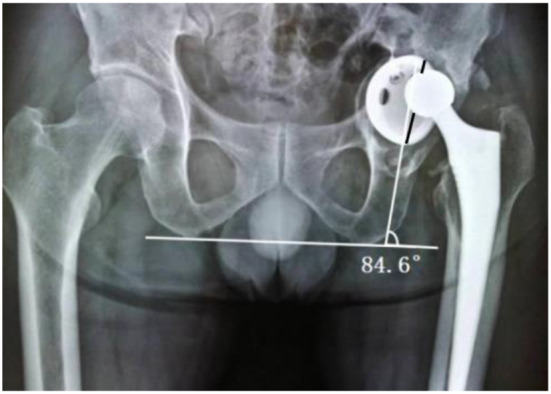
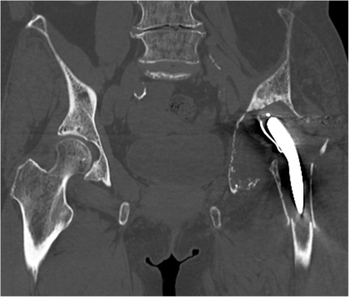
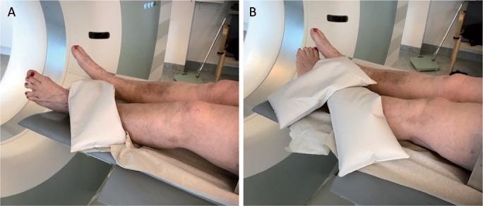
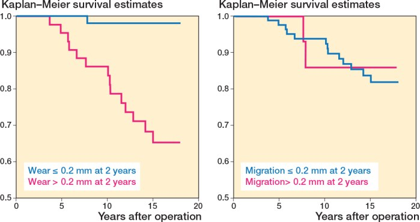
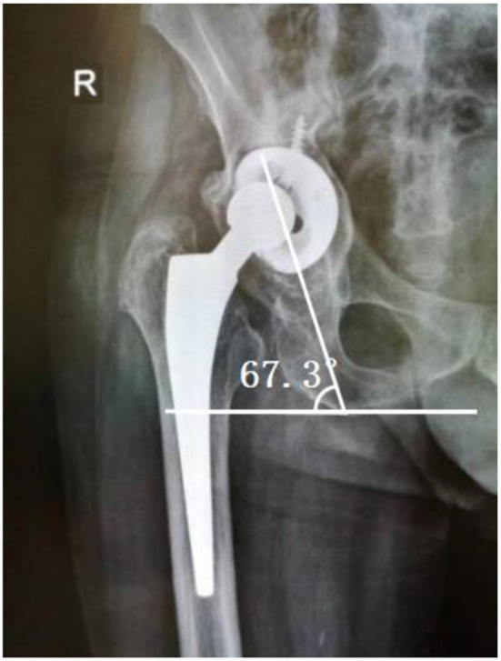
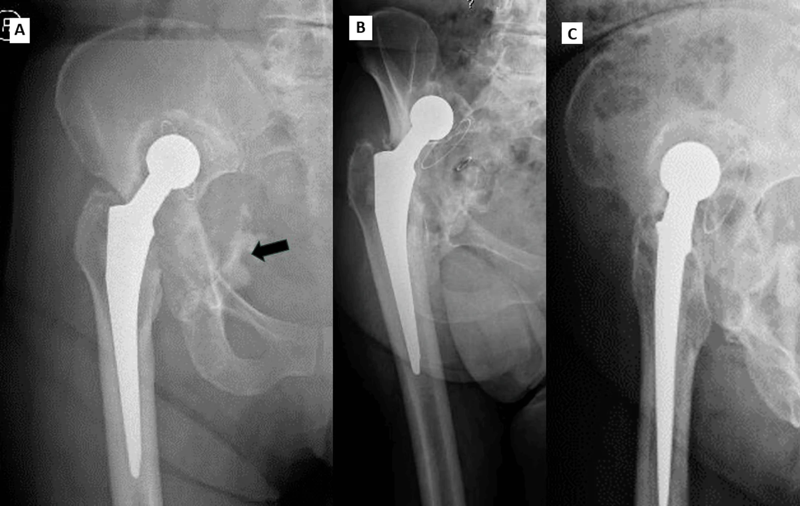

6140 — Lỏng vô khuẩn quanh khớp háng nhân tạo ở người trẻ: đường sáng, tiêu xương & chọn mổ lại / Aseptic loosening after total hip arthroplasty
Tags: pattern:long-khop pattern:tieu-xuong-quanh-implant pattern:duong-sang-quanh-implant pattern:di-lech-implant pattern:khuyet-xuong-o-coi vung:khop-hang vung:co-xuong score:Paprosky score:DeLee-Charnley score:Gruen protocol:X-quang-khop-hang protocol:CT-khop-hang protocol:CT-di-dong protocol:MRI-MARS incidentaloma:khong
Mức chắc chắn (certainty): tổng hợp y văn (literature synthesis) — ghép tổng quan hệ thống yếu tố nguy cơ (Li GQ, Zhang J, Huang Y. World J Orthop 2026;17:114482, PMC12836167), nghiên cứu hình ảnh ổ cối (He A, Zhang Y, Lu C, Cao L, Liu J, Zhong Z. BMC Musculoskelet Disord 2025;26, PMC12013175), RCT RSA 18 năm (Johannessen HG et al., Acta Orthop 2025;96:618–624, PMC12357177), tổng quan người trẻ HXLPE (Deans CF, Buckner BC, Garvin KL. J Clin Med 2023;12:6615, PMC10607435), CT di động (Sandberg O et al., Acta Orthop 2022;93:5240, PMC9620441), đoàn hệ chuôi CFP (Ma Y et al., Orthop Surg 2025;17, PMC12318678), tổng quan mổ lại ổ cối (García-Rey E, Lustig S, Karachalios T, Zagra L. EFORT Open Rev 2026;11, PMC13677250), ca mất xương nặng 17 năm (Caiano P et al., Cureus 2026;18:e115454, PMC13623341) và ca tiêu xương 45 năm (Ishikura H et al., BMC Musculoskelet Disord 2021;22, PMC8152131).
Điểm chốt của bài: "lỏng vô khuẩn" là chẩn đoán hình ảnh + thời gian, không phải một con số trên một phim. Chốt cứng: đường sáng > 2 mm lan rộng dần, di lệch/lún implant, khuyết xương tiến triển — nhưng X-quang chỉ nhạy 59%, nên khi nghi mà phim chưa rõ thì CT di động (Se 77%/Sp 100%) hoặc so phim nền mới là bước tiếp theo. Trước khi gọi "vô khuẩn", phải loại PJI (bài 6110) — vì điều trị ngược nhau.
1. Tổng quan — vì sao implant "lỏng" và vì sao hình ảnh trông như vậy
- Định nghĩa: lỏng vô khuẩn (aseptic loosening) = mất vững cơ học của implant mà không có nhiễm trùng, biểu hiện bằng đường sáng quanh implant tiến triển, di lệch, và tiêu xương quanh khớp (periprosthetic osteolysis). Đây là nguyên nhân mổ lại muộn hàng đầu của thay khớp háng nguyên phát (PMC12836167).
- Số liệu nền phải nhớ:
- Gộp 20 nghiên cứu / 520.789 ca: tỉ lệ lỏng vô khuẩn 1,96% (PMC12836167).
- Yếu tố nguy cơ (OR): BMI cao hơn = 1,116; chỉ số Charlson cao hơn = 1,378; yếu tố liên quan implant = 1,497; lối sống bất lợi (hút thuốc/rượu) = 2,198; nam = 1,232; bảo vệ: nhóm không da trắng 0,445, yếu tố di truyền thuận lợi 0,723 (PMC12836167).
- Người trẻ là nhóm "sống đủ lâu để thấy hỏng": polyethylene quy ước (CPE) cho sống 10 năm thấp tới 83% và tiêu xương tới 56%; polyethylene liên kết chéo cao (HXLPE) gộp 5–15 năm còn tiêu xương 4,1–6,6%, mổ lại vì mòn 0–5,2%, và ở người < 50–55 tuổi nhiều loạt báo 0% mổ lại vì mòn/tiêu xương tới 12 năm (PMC10607435).
- Mòn quyết định hơn di lệch sớm: trong RCT 150 THA có RSA 10 năm, mòn PE > 0,2 mm ở 2 năm → HR 19,4 (2,55–147) cho lỏng về sau, trong khi di lệch > 0,2 mm → HR 0,88 (0,20–3,89); AUC 0,85 vs 0,56. Sống 18 năm không lỏng: CPE 65% (48–77) vs XLPE 96% (85–99) — nguy cơ gấp 9 lần (PMC12357177).
- TẠI SAO đường sáng lại "đen" trên X-quang: implant kim loại chắn toàn bộ tia; xương (hydroxyapatit, 200–1.000 HU) chắn mạnh; còn màng xơ/granulation tissue (0–60 HU) và dịch (0–20 HU) gần như không chắn → hiện thành dải sáng. Vì X-quang là ảnh chiếu 2D, màng mỏng chỉ thấy khi tiếp tuyến với tia, nên ngưỡng thực dụng là 2 mm — dưới ngưỡng này không loại trừ được gì.
- TẠI SAO tiêu xương tiến triển: hạt mòn polyethylene (cỡ 0,1–1 µm) bị đại thực bào nuốt → giải phóng TNF-α, IL-1β, IL-6 và RANKL → biệt hóa hủy cốt bào → tiêu xương quanh implant. Hạt và dịch đi theo "khoảng khớp hiệu dụng" (effective joint space) — mọi chỗ xương–implant không áp sát tuyệt đối đều là đường dẫn, kể cả lỗ vít ổ cối, đầu chuôi, mấu chuyển; vì vậy tiêu xương có thể xuất hiện xa khớp và không đối xứng. Áp lực dịch trong khoang kín còn gây hoại tử xương do chèn ép → lỗ tiêu xương lanh (ballooning).
- TẠI SAO ngưỡng mòn lại có ý nghĩa: mòn < 0,1 mm/năm** gần như **không gây tiêu xương**; **> 0,2 mm trong 2 năm đầu là dấu hiệu "implant sẽ lỏng" — đây là cơ sở của RSA (radiostereometric analysis), phương pháp đo di lệch/mòn chính xác 0,1–0,2 mm.
- TẠI SAO CT hơn X-quang ở một số điểm: CT cắt lớp nên không bị chồng lấp — đo được bề dày màng, thể tích khuyết xương, thành ổ cối còn bao nhiêu mm, di lệch tâm xoay; nhưng kim loại gây beam hardening/photon starvation → phải dùng kernel giảm nhiễu kim loại (MAR) và cửa sổ xương.
- TẠI SAO CT di động (inducible displacement CT): lỏng là vấn đề cơ học, nên xoay chân vào–ra rồi chụp 2 lần sẽ làm implant di lệch nếu nó đã mất vững. Trong 57 ca nghi lỏng: X-quang Se 59% / Sp 85% so với CT di động Se 77% / Sp 100% (PMC9620441).
- TẠI SAO MRI cần MARS: kim loại gây bất đồng cảm từ → mất tín hiệu quanh implant; MARS/SEMAC/VAT cho thấy phù tủy tại mặt phân cách, dịch khớp, ngấm màng hoạt dịch — hữu ích khi phân biệt với PJI (Se 78,3%/Sp 81,8% cho PJI, bài 6110).
2. Mẫu hình + chẩn đoán phân biệt theo vị trí và thời điểm (gamut)
- Theo thời điểm — quyết định cách đọc phim:
- < 2 năm (lỏng sớm): micromotion/fixation kém (chuôi chưa liền xương), lún chuôi sớm, gãy xương quanh implant, nhiễm cấp. Đường sáng mới xuất hiện quanh toàn bộ chuôi hoặc quanh vít ổ cối.
- 2–10 năm (lỏng do mòn): mòn PE → viêm hạt → tiêu xương → lỏng. Đường sáng thường bắt đầu ở vùng trên–ngoài ổ cối (DeLee I) hoặc Gruen 1/7, kèm nang tiêu xương.
- > 10 năm (lỏng muộn): mòn tích lũy, gãy chuôi/cổ chuôi, ARMD ở THA metal-on-metal, mất xương nặng (Paprosky III).
- Theo vị trí — bản đồ đọc:
- Ổ cối: DeLee–Charnley I–III (chia ổ cối thành 3 phần bằng nhau từ ngoài vào trong). Đường sáng liên tục cả 3 vùng hoặc > 2 mm = nghi lỏng; vùng III đơn độc thường do khoang chậu (psoas) hoặc vít.
- Chuôi: Gruen 1–7 (1 mấu chuyển lớn, 2–3 mặt bên, 4 mũi chuôi, 5–6 mặt trong, 7 mấu chuyển nhỏ). Lún > 2 mm hoặc đường sáng > 2 mm ở ≥ 3 vùng = nghi lỏng.
- Bốn cơ chế gây tiêu xương quanh implant — nhớ "WIMP":
- W — Wear (mòn): mòn đầu–liner → lệch chỏm khỏi tâm liner (head–cup distance bất đối xứng); là cơ chế số 1 ở người trẻ.
- I — Infection (nhiễm): màng sinh học, dịch đục/khí, phù mô lan — điều trị ngược hoàn toàn (bài 6110).
- M — Mechanical (cơ học): micromotion, mất vững xoay, gãy vít/chuôi → di lệch khi chịu tải.
- P — Pressure/particle (áp lực hạt): hiệu ứng khoảng khớp hiệu dụng → nang tiêu xương lanh, có thể xa khớp.
- Mẫu hình A — đường sáng quanh ổ cối: lỏng ổ cối vs PJI vs màng xơ ổn định. Chốt: > 2 mm + lan ≥ 2 vùng + tiến triển, góc nghiêng ổ cối (AA) tăng, chỏm lệch tâm (DHCD).
- Mẫu hình B — khuyết xương khu trú "bóng bay": bệnh hạt (particle disease) vs nang xương lành vs PJI. Chốt: bờ rõ, nhiều ổ, không phù mô, không dịch, bệnh nhân không sốt.
- Mẫu hình C — di lệch/lún implant: lỏng cơ học vs gãy xương quanh implant vs trật khớp. Chốt: so phim nền, CT di động, khoảng trống dưới mũi chuôi tăng.
- Mẫu hình D — đau + phim "sạch": lỏng ẩn vs PJI ẩn vs đau quy chiếu cột sống vs bệnh gân cơ mông. Chốt: CRP/ESR + chọc hút, CT di động, MRI MARS.
3. Bảng so sánh phân biệt (ma trận đối chiếu)
| Thực thể (entity) | Hình ảnh điển hình (X-quang/CT/MRI) | Chốt vào (rule-in) | Chốt loại (rule-out) | Gợi ý xác nhận |
|---|---|---|---|---|
| Lỏng vô khuẩn ổ cối | Đường sáng > 2 mm ở DeLee I–III, lan dần; AA tăng; DHCD ≥ 0,16 cm; chỏm lệch tâm | NTA ≥ 1 vùng rộng + (AA ≥ 53,2° hoặc DHCD ≥ 0,16 cm); di lệch khi CT di động | Đường sáng < 2 mm, không tiến triển, CRP/ESR bình thường, dịch vô khuẩn | So phim nền; CT di động; chọc hút loại PJI |
| Lỏng vô khuẩn chuôi | Đường sáng Gruen ≥ 3 vùng, lún ≥ 2 mm, bệ xương dưới mũi chuôi, gãy cement | Lún tiến triển + đường sáng lan + đau cơ học | Đường sáng ổn định < 2 mm nhiều năm, không lún | So phim 2 lần cách ≥ 6 tháng; CT |
| PJI (bài 6110) | Đường sáng có thể giống hệt; CT: khí, tụ dịch có vỏ; MRI MARS: dịch + phù mô + ngấm màng hoạt dịch lan ngoài bao | Đường rò, 2 cấy cùng loài, khí trong khớp, dịch mủ | Không dịch, không phù, CRP/ESR thấp | Chọc hút: WBC/PMN, alpha-defensin, cấy |
| Bệnh hạt / tiêu xương (particle disease) | Khuyết xương bờ rõ, nhiều ổ, lanh, quanh implant; không phù mô, không dịch | Tiền sử implant lâu năm + mòn PE + khuyết xương không đau | Phù mô/dịch/khí → PJI; di lệch → lỏng cơ học | CT thể tích khuyết xương; so phim |
| ARMD / giả u (MoM) | Khối quanh khớp, mảnh kim loại, có thể chèn ép mạch chậu; không khí | MoM + khối + kim loại trong mô + cobalt/chromium cao | Dịch mủ/khí/đường rò → PJI | MRI MARS, siêu âm, ion kim loại |
| Che khuất ứng lực (stress shielding) | Loãng xương vùng mấu chuyển (Gruen 1/7), vỏ mỏng nhưng không đường sáng, không đau | Chuôi cứng (CoCr) + loãng xương vùng lực truyền, ổn định theo thời gian | Đường sáng tiến triển + đau + lún → lỏng | So phim; DXA nếu cần |
| Màng xơ ổn định (fibrous membrane) | Đường sáng mỏng < 2 mm, đều, không tiến triển | Ổn định ≥ 2 năm, không đau, không di lệch | > 2 mm hoặc lan rộng dần → lỏng | Theo dõi 6–12 tháng |
| Gãy xương quanh implant | Đường gãy qua mấu chuyển/chuôi, di lệch; không dịch | Đau đột ngột + đường gãy rõ | Dịch/khí/sốt → PJI; không đường gãy → lỏng đơn thuần | X-quang 2 bình diện; CT nếu kín |

*Trái: THA trái 6 năm, đau 8 tháng — AA 84,6°, đường sáng rộng (TA) ở cả 3 vùng DeLee, DHCD > 0,16 cm (chỏm lệch tâm). Đây là bộ ba góc nghiêng – đường sáng – lệch chỏm của lỏng ổ cối. Nguồn: He A, Zhang Y, Lu C, Cao L, Liu J, Zhong Z. BMC Musculoskelet Disord 2025 (PMC12013175, Fig. 7), CC BY-NC-ND 4.0 — nguyên bản, không cắt/ghép.*Ba dấu hiệu phải đọc thành tiếng
- Đường sáng > 2 mm: "possible loosening" theo tiêu chuẩn đang dùng; 85,4% (35/41) ca lỏng có ít nhất một vùng rộng ≥ 2 mm, so với 4,9% (3/61) nhóm chứng (PMC12013175).
- Tiến triển: "highly possible" — phải so với phim nền, đây là lý do mất phim nền làm chẩn đoán khó đi hẳn.
- Di lệch/gãy: "definite loosening" — không cần chờ thêm.
4. Protocol chụp + hệ phân độ/điểm chuẩn hóa
- X-quang là bước 1, nhưng phải đúng kỹ thuật: AP khung chậu + AP và nghiêng khớp háng, chụp đứng chịu lực khi đo di lệch (phim nằm đánh giá thấp lún/di lệch), cùng tư thế xoay với phim nền, ghi hệ số phóng đại. Đo: AA (góc nghiêng ổ cối, bình thường ~40–45°), NTA (số vùng DeLee có đường sáng ≥ 2 mm), DHCD (chênh khoảng cách chỏm–mép ổ cối trên/dưới), DVD1/DVD2/DHD (di lệch tâm xoay theo chiều dọc/ngang so bên đối diện).
- Ngưỡng chẩn đoán từ nghiên cứu 41 ca lỏng / 61 ca chứng (PMC12013175):
- DVD1 ≥ 1,49 cm; DHCD ≥ 0,16 cm; AA ≥ 53,2°; NTA ≥ 1.
- Tiêu chuẩn phối hợp: NTA ≥ 1 và (AA ≥ 53,2° hoặc DHCD ≥ 0,16 cm).
- CT: lát mỏng ≤ 1 mm, kernel giảm kim loại, cửa sổ xương; đo bề dày màng (mm), thể tích khuyết xương, thành ổ cối còn lại, di lệch tâm xoay. CT di động: chụp 2 lần với xoay chân trong/ngoài tối đa, chồng ảnh theo xương chậu tham chiếu → thấy implant "nhúc nhích"; Se 77% / Sp 100% (PMC9620441).
- MRI MARS: khi cần phân biệt PJI, đánh giá phù tủy/mô, dịch, ngấm màng hoạt dịch (bài 6110). Xạ hình 3 pha: dương tính ở cả lỏng và nhiễm → không đủ phân biệt, chỉ dùng khi các bước trên không kết luận.

CT coronal ở một ca tiêu xương 45 năm sau đặt chỏm acrylic: thành trong ổ cối mỏng như giấy, tâm xoay di lệch lên trên, kèm gãy xương quanh implant. Giá trị của CT không phải "thấy đường sáng" mà là đo được còn bao nhiêu xương để chọn kỹ thuật mổ lại. Nguồn: Ishikura H, Nakamura M, Matsuda K, Tanaka T, Kawano H, Tanaka S. BMC Musculoskelet Disord 2021;22 (PMC8152131, Fig. 3), CC BY 4.0.- Phân độ mất xương ổ cối Paprosky (quyết định kỹ thuật mổ lại):
- I: ổ cối còn hình bán cầu, teardrop – Kohler – ụ ngồi nguyên vẹn, không di lệch.
- II: bán cầu biến dạng nhưng trụ đỡ còn; IIA di lệch < 2 cm** lên trên; **IIB** di lệch **> 2 cm kèm dịch chuyển ra ngoài; IIC di lệch vào trong (teardrop bị phá).
- IIIA: di lệch > 3 cm lên trên, đường Kohler gián đoạn, teardrop còn; IIIB: teardrop mất, tiêu ụ ngồi, có thể mất liên tục khung chậu (pelvic discontinuity).
- Kết quả tham chiếu: 37 khớp Paprosky III dùng vòng gia cố + ghép xương: sống 10 năm 95,3% (không lỏng vô khuẩn) nhưng 76,5% (không lỏng trên X-quang) — tức hình ảnh "lỏng" đi trước thất bại lâm sàng (PMC13677250).
- Chọn mổ lại theo mất xương: ổ cối: cup mới ± augment (IIA–IIB) → vòng gia cố + ghép xương ép (IIB–IIIA) → cup–cage/tantalum + ghép xương khối (IIIB) → cấy ghép in 3D khi mất liên tục. Chuôi: thay liner đơn thuần nếu chuôi vững; chuôi xốp toàn phần hoặc chuôi rãnh (Wagner) khi mất xương thân chuôi.
flowchart TD
A["Đau khớp háng sau THA + X-quang"] --> B{"Có đường sáng > 2 mm hoặc di lệch?"}
B -->|"Không"| C["So phim nền: mòn, tiêu xương khu trú, lún"]
B -->|"Có"| D["Đo NTA, AA, DHCD, DVD1 theo vùng DeLee / Gruen"]
D --> E{"NTA ≥ 1 và AA ≥ 53,2° hoặc DHCD ≥ 0,16 cm?"}
E -->|"Có"| F["Nghi lỏng ổ cối — phân độ Paprosky"]
E -->|"Không"| C
C --> G["CRP/ESR + chọc hút dịch khớp"]
G -->|"Dịch mủ hoặc cấy dương"| H["PJI — bài 6110, không gọi lỏng vô khuẩn"]
G -->|"Vô khuẩn"| I["CT di động hoặc MRI MARS"]
I --> J{"Di lệch khi xoay chân?"}
J -->|"Có"| K["Lỏng xác định — mổ lại theo Paprosky"]
J -->|"Không"| L["Theo dõi 6–12 tháng, so phim cùng tư thế"]

Nguyên lý CT di động: (A) xoay chân ra ngoài tối đa, (B) xoay vào trong tối đa, mỗi tư thế chụp một lần; phần mềm chồng ảnh theo xương chậu → implant vững sẽ đứng yên, implant lỏng sẽ di lệch. Nguồn: Sandberg O, Carlsson S, Harbom E, Cappelen V, Tholén S, Olivecrona H, Wretenberg P. Acta Orthop 2022;93 (PMC9620441, Fig. 2), CC BY-NC 4.0.
Kaplan–Meier 18 năm: mòn > 0,2 mm ở 2 năm tách rõ hai đường (HR 19,4), còn di lệch > 0,2 mm gần như trùng nhau (HR 0,88) — bằng chứng cho việc theo dõi mòn chứ không chỉ nhìn di lệch. Nguồn: Johannessen HG et al., Acta Orthop 2025;96 (PMC12357177, Fig. 6), CC BY 4.0.5. Biến thể bình thường và cạm bẫy
- Đường sáng < 2 mm, đều, không đổi sau 2 năm** ở mặt tiếp giáp **cement–xương** là **bình thường**; chỉ gọi lỏng khi **> 2 mm, lan rộng, hoặc có di lệch. Đừng "overcall" một dải sáng mảnh ở vùng I.
- Phim nằm vs phim đứng: cùng một khớp có thể khác 2–3 mm về vị trí tâm xoay; xoay chân khác nhau làm AA lệch vài độ. Luôn so cùng tư thế, cùng hệ số phóng đại.
- X-quang bình thường KHÔNG loại trừ lỏng — Se chỉ 59% (PMC9620441); bệnh nhân đau + phim sạch vẫn phải đi tiếp bằng CT di động/MRI và loại PJI.
- Nhiễu kim loại trên CT tạo vùng tối giả quanh chuôi giống tiêu xương — dùng MAR và đối chiếu cửa sổ xương; đừng đo khuyết xương trên ảnh nhiễu.
- Khí trong ruột/mô mềm chồng lên ổ cối trên phim thẳng giả "khuyết xương"; xem thêm bình diện nghiêng/CT.
- Bệnh hạt có thể "im lặng" rất lâu: khuyết xương lớn nhưng không đau, không di lệch — không mổ chỉ vì "có nang"; mổ khi tiến triển, đau, nguy cơ gãy, hoặc mất xương đe dọa khả năng mổ lại.
- Đừng nhầm "mất liên tục khung chậu" với đường gãy cũ/di lệch do tư thế: tiêu chuẩn là đường gãy ngang nhìn thấy + bờ dưới khung chậu di lệch vào trong + bất đối xứng vòng bịt (PMC13677250); chẩn đoán quá tay dẫn tới mổ lớn không cần thiết.
- Vôi hóa quanh khớp (bài 6141) có thể che mất đường sáng hoặc giả khuyết xương; và HO sau mổ lại tăng gấp 2,2 lần ở người có PJI.
6. Tự lượng giá — Blind Quiz
Ca 1 — Nam 62 tuổi, THA trái 6 năm, đau háng tăng dần 8 tháng, không sốt.
- Câu hỏi: Có mấy vùng DeLee có đường sáng rộng? Góc nghiêng ổ cối bao nhiêu? Chỏm có nằm đúng tâm liner không? Ba chẩn đoán phân biệt và bước tiếp theo?
Bấm để hiện đáp án (findings + chẩn đoán)
- Findings: AA 84,6° (bình thường ~40–45°), đường sáng ≥ 2 mm ở cả 3 vùng DeLee, DHCD > 0,16 cm (chỏm lệch lên trên) → bộ ba của lỏng ổ cối.
- Chẩn đoán: lỏng vô khuẩn ổ cối — cơ chế mòn + micromotion; AA quá lớn làm tăng lực cắt lên mặt tiếp giáp.
- Phân biệt: PJI (phải loại bằng CRP/ESR + chọc hút), bệnh hạt đơn thuần, màng xơ ổn định (loại vì có tiến triển + di lệch).
- Bước tiếp: chọc hút loại PJI → CT/MARS MRI đánh giá mất xương → phân độ Paprosky → mổ lại.
- Nguồn ảnh: He A et al., BMC Musculoskelet Disord 2025 (PMC12013175, Fig. 7), CC BY-NC-ND 4.0.
Ca 2 — Nữ 72 tuổi, THA phải 16 năm, đau 9 ngày sau khi bị ngã nhẹ.

- Câu hỏi: Đường sáng nằm ở đâu? Góc nghiêng bao nhiêu? Có bằng chứng gãy xương quanh implant không? Cần chụp gì thêm?
Bấm để hiện đáp án
- Findings: AA 67,3°, đường sáng rộng ở các vùng DeLee, không thấy đường gãy rõ trên phim này.
- Chẩn đoán: lỏng ổ cối (tiến triển) — cơn đau sau ngã nhẹ ở implant lâu năm là cờ đỏ cho cả gãy kín và lỏng mất bù.
- Bước tiếp: CT tìm gãy xương quanh implant/khuyết xương, chọc hút loại PJI, so phim cũ.
- Nguồn ảnh: He A et al. (PMC12013175, Fig. 8), CC BY-NC-ND 4.0.
Ca 3 — Nam 58 tuổi, THA có cement 17 năm, đau mông–háng, phim thấy "khối cản quang lạc trong khung chậu".

- Câu hỏi: Khối cản quang lạc là gì? Còn trụ đỡ nào của ổ cối? Phân độ Paprosky? Kỹ thuật mổ lại?
Bấm để hiện đáp án
- Findings: lỏng ổ cối có cement với mất xương ổ cối nặng, cement di trú vào khung chậu (mũi tên), tâm xoay di lệch lên trên, đường Kohler bị phá, nghi mất liên tục khung chậu.
- Chẩn đoán: lỏng vô khuẩn muộn + mất xương Paprosky IIIB.
- Điều trị: lấy cement trong khung chậu, ghép xương khối + vòng Burch–Schneider, theo dõi dài hạn — ca này ổn định 17 năm (PMC13623341).
- Cạm bẫy: cement di trú trong khung chậu là thách thức khi lấy bỏ (nguy cơ tổn thương mạch/thần kinh vùng chậu); và mất liên tục khung chậu bị chẩn đoán quá tay nếu chỉ dựa vào một đường sáng.
- Nguồn ảnh: Caiano P, Rodrigues J, Santos F, Mendonca A, Judas F. Cureus 2026;18:e115454 (PMC13623341, Fig. 1), CC BY 4.0.
Bài liên quan chéo
- 6110 – Nhiễm trùng quanh khớp nhân tạo (PJI) sau THA — phải loại trước khi gọi "vô khuẩn"
- 6141 – Vôi hóa quanh khớp háng nhân tạo — HO làm tăng nguy cơ PJI, che mất đường sáng
- 6107 – Thay khớp háng ở người sống sót ung thư nhi — nền tảng implant ở người trẻ
- 6105 – Hoại tử xương ở trẻ điều trị ALL — lý do phải thay khớp sớm
- 361 – Khớp háng: giải phẫu & bệnh lý
- 300 – Tổng quan Hệ Cơ – Xương – Khớp
- 600 – Tổng quan Nhi khoa
Ảnh
- Tên file:
6140_long-vo-khuan_Modality_SourceID.jpg. Nguồn + giấy phép từng ảnh trongimages/CREDITS.md. - Bài không có ảnh composite vì 2 ảnh chính là CC BY-NC-ND (không được cắt/ghép).
Không dùng để chẩn đoán độc lập khi chưa có người hướng dẫn.